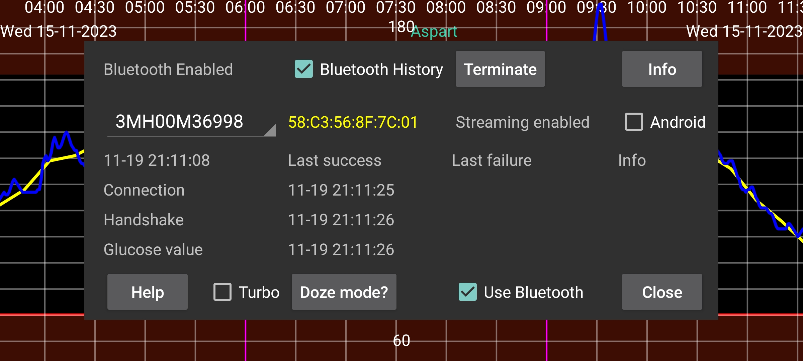

The spinner contains the name of the sensor. If Juggluco is using more than one sensor at the same time, you can select the sensor for which to show information.
Doze mode leads you to a screen with information on how to disable battery optimizations for Juggluco, that can prevent Juggluco from functioning.
Bluetooth history: On Libre 2, history are values of the past in 15 minute intervals. Previously they were only received by scanning. When you turn this option on, the History values are also received via Bluetooth. Also, other things will work differently. To Libreview will be sent the history values, instead of averages of the stream values. The disadvantage is that it is slower. This can be an issue on WearOS watches. This option has no effect on Libre 3 and US/CA/AU/KR Libre 2 sensors; they always receive history values via Bluetooth.
Bug: only present on WearOS for Libre 3. This needs to be set on Samsung Galaxy Watch 5 and higher, until Samsung fixes this bug. Without this option, glucose values will be received 2 instead of 1 minute apart. Watch 5 to Ultra will always receive values from Libre 2 sensors spaced two minutes apart.
⏰: Let Juggluco use an alarm clock function to ensure the correct timing of connecting to Dexcom G7 and ONE+ sensors. Without it, when the device is in deep sleep when not used, it will sometimes not awake to reconnect to the sensor and it will not immediately receive a glucose value. My WearOS watch had this problem in the middle of the night, probably because I moved very little. Because of backfill afterwards and slow awakening, I didn’t see it on the watch and phone, only in the log files. My phone doesn’t need this setting and seems to perform worse when it turned on.
Permission: Previous versions of Juggluco required location permission to find the device address of the sensor. This is no longer necessary for the sensors I use. Maybe there are still sensors out there for which it is necessary; in that case you can turn it on. After the first contact Jugglhttp://127.0.0.1:17580/hallo/x/streamuco saves the device address and location permission is always useless. The device address, if known, is displayed after the sensor identifier. Red means a US-like sensor. Android 12 has a new Nearby devices permission, which can be used instead of location permission for searching for a Bluetooth device address, but it is also needed for later contact with Bluetooth devices.
Forget: Let Juggluco forget the device address and scan for the device address. For some sensors this is needed to get a connection and is then done automatically by Juggluco. With this button you can manually say that Juggluco should do that, because there are maybe other occasions in which it is also needed.
Terminate: stop connecting to this sensor via Bluetooth. If later you want to again receive stream glucose values from this sensor, you only have to scan it again. If the sensor is directly connected with the watch, you need first to turn that off and then press on Terminate on the phone and then on Sync on the watch.
Unpair: Aidex X sensors remember the phone or watch they are paired with and refuse to bond to other devices. By pressing “Unpair” a command is sent to the sensor and if successful, it is again possibly for other phones or watches to connect to the sensor. When you use left menu→Watch→WearOS config → “Direct sensor …” to transfer the sensor from and to the watch, the unpairing will also be done, and you shouldn’t use “Unpair”.
Clear: (Button only present when connecting with Aidex X sensors.) Pressing this button removes all glucose values from the sensor and restarts the sensor like it is a new sensor. This makes it possible to use a sensor longer than 15 days.
Reset: Sibionics 2 only. When switching sensor in a transmitter this button should be pressed. Either when Juggluco is connected to the old sensor and/or when Juggluco is connect to the new sensor. You shouldn’t press it when the transmitter already was reset by another app.
Turbo: Increases effort to contact with sensor in the hope that it results in less connection errors, but can uses more battery power. Seems to be needed on Watch4 with Freestyle Libre 2 sensors, but not with Freestyle Libre 3 sensors and on none of the smartphones I tried it on.
Android: Let Android instead of Juggluco make the connection with the sensor. Don’t use it! In most cases it will take longer before a connection is established. This option was introduced because of a broken Android 13 version, which is later repaired. You should only turn this on when in this sensor screen no recent times are displayed. That means that no connection errors or sensor errors are shown, but also no values are received and you can get it working again by turning off and on Bluetooth. When you try to connect European Libre 2 sensor with two apps on the same phone at the same time (that is only then possible), you can also get in that state.
Info: Gives start and end times and last scan and stream times of sensor.
To connect to a Freestyle Libre 2 sensor via Low Energy Bluetooth, Bluetooth should be turned on. Before the sensor is scanned successfully by this app, nothing will happen. The sensor shouldn't be connected with FreeStyle reader or other applets on smartphones. Abbotts Libre app should uninstalled, disabled or force stopped. If you have started the sensor with Freestyle Reader and you can’t turn it off, you can prevent it from getting into contact with the sensor by putting the reader in a Faraday cage.
Use Bluetooth should be turned on.
If the above conditions are satisfied, it can still take a long time before the app receives glucose values from the sensor. Often it takes a minute, but at other times it takes much longer. The Connection stage gives the most difficulties. The most frequent are failures with status=133, which is the status argument of onConnectionStateChange(BluetoothGatt bluetoothGatt, int status, int newState). It means Bluetooth device not found. Nearly always it just takes some time before the device is found. It is also possible that the sensor is connected to another device, temporary not functioning well, other devices are interfering or the Bluetooth of Android doesn’t function. Sometimes turning Bluetooth off and on seems to help or rebooting the phone or turning off the Bluetooth connection of other devices. Other problems are sometimes resolved by scanning the sensor. Intervening water (including body water) can be a problem, so that wearing a WearOS watch on a different arm than the sensor can give connection problems when the arms are held in a way that the body is positioned between watch and sensor.
One user of AccuChek SmartGuide reported that when a Bluetooth search couldn’t find the sensor, it was solved by to going to connected Bluetooth devices in Android settings, select the sensor and press “Forget”.
Scanning the sensor with Juggluco (with Use Bluetooth enabled) on another phone, will steal the connection away from this phone and it can take some time, with scanning in between, to get it back again.